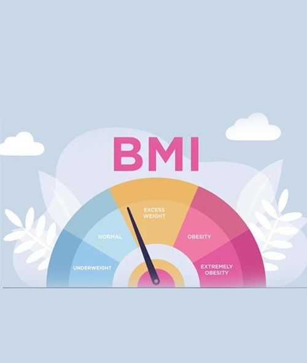

<section class="section" id="process">
  <div class="container">
    <div class="row justify-content-center">
      <div class="col-md-8 col-lg-6 text-center">
        <div class="section-heading">
          <!-- Heading -->
          <h2 class="section-title">Create Your Own Project</h2>
        </div>
      </div>
    </div>
    <div class="justify-content-center">
      <button class="btn-new btn-warning"
       (click)="reset()">
       Project Reset <i class="fa fa-refresh"></i>
      </button>
      <hr>
      <ul ngbNav #nav="ngbNav" [(activeId)]="active" class="nav-tabs">
        <li [ngbNavItem]="1" [disabled]="active === 2 || active === 3">
          <a ngbNavLink>Step #01</a>
          <ng-template ngbNavContent>
            <div class="row">
              <div class="col-12">
              </div>
            </div>
          </ng-template>
        </li>
        <li [ngbNavItem]="2" [disabled]="active === 1 || active === 3">
          <a ngbNavLink>Step #02</a>
          <ng-template ngbNavContent>
            <div class="row">
              <div class="col-4">
                
              </div>
              <div class="col-8">
                <form [formGroup]="formGroup" (validSubmit)="onSubmit()">
                  <div class="form-inline form-group">
                    <div class="form-check form-switch">
                      <input class="form-check-input" type="checkbox" id="flexSwitchCheckDefault"  formControlName="Q1">
                      <label class="form-check-label" for="flexSwitchCheckDefault">01.Scattered white patches appear on the upper surface of leaves?</label>
                    </div>
                  </div>

                  <div class="form-inline form-group">
                    <div class="form-check form-switch">
                      <input class="form-check-input" type="checkbox" id="flexSwitchCheckDefault"  formControlName="Q2">
                      <label class="form-check-label" for="flexSwitchCheckDefault">02.Is powdery coating appearing on the leaves?</label>
                    </div>
                  </div>

                  <div class="form-inline form-group">
                    <div class="form-check form-switch">
                      <input class="form-check-input" type="checkbox" id="flexSwitchCheckDefault"  formControlName="Q3">
                      <label class="form-check-label" for="flexSwitchCheckDefault">03.Are leaves drying up and dropping off?</label>
                    </div>
                  </div>
                  <button *ngIf="!Output" type="submit" class="btn btn-primary">
                    Save
                  </button>
                  <div *ngIf="Output">
                    <button
                      type="submit"
                      class="btn btn-dark"
                      [disabled]="active === 3"
                      (click)="nav.select(3)"
                    >
                      Go to Your Final Outcome
                    </button>
                  </div>
                </form>
              </div>
            </div>
          </ng-template>
        </li>
        <li [ngbNavItem]="3" [disabled]="active === 1 || active === 2">
          <a ngbNavLink>Final Result</a>
          <ng-template ngbNavContent>
            <div class="row justify-content-md-center">
              <h4>Predict Result</h4>
            </div>
            <div class="row justify-content-md-center">
              <div>
                <h2 class="badge badge-warning" style="font-size: 24px">
                  {{ Output }}
                </h2>
              </div>
            </div>
          </ng-template>
        </li>
      </ul>

      <div [ngbNavOutlet]="nav" class="mt-5"></div>
    </div>
  </div>
</section>
